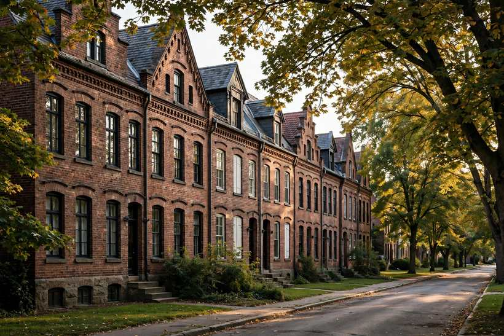
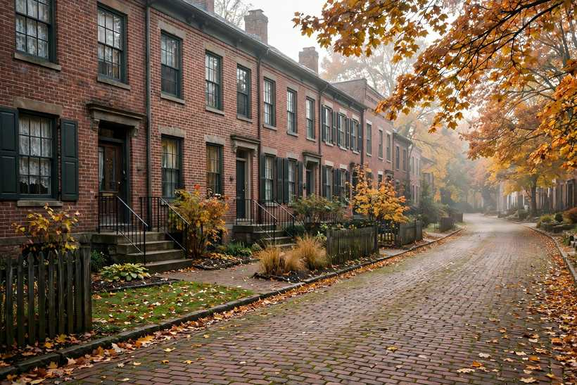

North-Side Historic District, Belleville, Illinois
Plumbing in the Hexenbuckel Historic District
Hinkle Plumbing Company serves the Hexenbuckel Historic District from 1610 W Main St, Belleville, IL 62220. This pre-Civil War residential district centers on the hump on North Illinois Street, and its brick homes carry the same early pipe cohort as the east-side historic core, in a different street pattern. Call (618) 677-6556 to discuss a problem.
Call (618) 677-6556Monday through Friday, 8:00 AM to 4:30 PMLocal district established 1991; City spelling Hexenbuckel
A North-Side Pre-Civil War District
The oldest homes north of Main Street
Hexenbuckel is a local historic district established in 1991, centered on North Illinois Street and described as one of Belleville's oldest residential districts. The district is also included within the National Register district listed in 1976, and the overlap is stated here rather than hidden. The name means Witches' Hump, for the hump on North Illinois Street, and the City spelling Hexenbuckel governs on this page; a one-c variant, Hexenbukel, appears in older material. Homes here are pre-Civil War residential stock in the German-immigrant cohort, though lot widths and setbacks are not described in sources read, so none are claimed. Pipe work is expect-and-check: galvanized supply lines, cast-iron drains, and clay laterals are the mix, with partial repipes to check. Leak detection and camera inspection suit finished interiors, and exterior work inside the local district needs a Design Review Request, with triggers checked per job.
Explore Hexenbuckel Historic District services
Hinkle Plumbing CompanyHistoric brick homes near North Illinois Street in the Hexenbuckel Historic District.
Services for This District
Plumbing services for pre-Civil War homes
Services below are scoped against an early pipe cohort and finished historic interiors, with diagnosis guiding scope.
01
Leak Detection
Hidden leaks in pre-Civil War homes hide behind finished walls, added bathrooms, and partial repipes. Meter checks, acoustic listening, and pressure testing narrow the search before any opening is made.
02Leak Repair
Leaks at joints, valves, and aging supply runs are repaired with the surrounding material in mind. The repair scope follows the detection findings and the condition of the adjoining pipe.
03Repiping
Galvanized supply lines and mixed-material patches reach end of life unevenly across a house. A material check maps what remains original and what was already replaced before a repipe scope is discussed.
04Sewer Camera Inspection
Clay laterals from this era carry joints every few feet, and roots exploit each one. A camera pass records joints, offsets, and breaks, and shows where a defect sits relative to the property line.
05Drain Cleaning
Cast-iron drains collect scale and grease, and clay laterals admit roots. Clearing is matched to the material in the ground, and a clog that returns points toward a camera inspection.
06Water Heater Repair
No hot water, rumbling tanks, and leaks at fittings are the usual repair questions. Repair-or-replace discussions weigh tank age, venting, and the permit rule for hot water heaters.
District Realities
What sets this district apart
A north-side position, a name with two spellings in circulation, and a residential walking-tour setting shape how work is described and scoped here.
The north-side pre-Civil War enclave
Hexenbuckel holds the oldest residential stock north of Main Street, distinct from the east-side historic core. The street pattern follows the North Illinois Street hump and the Charles, Scheel, and Church Street anchors, while the pipe cohort matches the early city pattern: galvanized supply, cast-iron drains, and clay laterals, with a possible lead service line to check. How we help: Era-typical expectations guide the first checks, and camera inspection plus material confirmation replace guesswork before scope is set for any house on these streets in the district.
The name itself as a verification trap
Two spellings circulate for this district. The City's current spelling is Hexenbuckel, while a one-c variant appears in older association material, older reference text, and 2007 press coverage. The district is also included within the National Register district, so one address can carry two designations with different rules. How we help: This page uses the City spelling throughout and states the National Register overlap plainly, so an address is checked against the right map and the right rules.
A residential district with walking-tour anchors
The Labor and Industry Museum and the Heckenkamp Mansion anchor walking-tour identity on nearby streets, but Hexenbuckel is residential, not a museum or commercial district. Exterior work inside the local district needs a Design Review Request, and district banners from a 2020 project mark an active district identity. How we help: Exterior scope is checked against current Historic Preservation Commission guidance, and review questions are raised before exterior work is planned for any address in the district.
Signs to Note
Signs that point toward early pipe materials
A small visible symptom can point to a bigger pattern.
Discolored water after still periods
Galvanized lines shed corrosion, and color that clears after running points toward supply-side material. A material check and a look at the service line come before fixture changes are discussed.
Falling pressure over time
Corrosion narrows galvanized supply runs gradually, so pressure falls fixture by fixture. Readings across the house, taken at several fixtures, show whether the restriction is local or system-wide.
Clogs that return to the same line
A clog that returns after clearing suggests roots, offsets, or a break rather than a fresh blockage. Clay laterals with many joints are the expect-and-check pattern here.
Damp patches with no visible source
Hidden supply or drain leaks show as damp patches, staining, or soft flooring in finished rooms. Detection methods narrow the location before finished surfaces are disturbed or opened.
Scope and Cost
What shapes the cost of a job here
Pipe age, finished interiors, and review rules set the scope of work in this district.
Diagnosis first
Detection and camera findings establish the failing section and its material. Findings are discussed by phone during office hours, and scope follows the evidence rather than assumption.
Repair in place
Isolated defects in sound pipe are handled as repairs, with access through finished walls and floors, plus any review requirement, as part of the scope discussion.
Planned replacement
Sections at end of life are scoped as replacements, with material, access, permits, and restoration discussed together. Call (618) 677-6556 to discuss a specific address.
District Anchors
Streets and anchors from the district record
The anchors below come from the district record and the walking-tour routes associated with the district.
North Illinois Street Hump
The hump on North Illinois Street gives the district its name, Witches' Hump. The street forms the spine of the district and the center of its pre-Civil War residential pattern.
Park at North Charles and Scheel Streets
A walking tour of the district starts at the park at North Charles Street and Scheel Street. The surrounding blocks hold the district's early residential stock.
Heckenkamp Mansion
The Heckenkamp Mansion stands on the walking-tour route through the district. It anchors tour identity without making the district commercial; the surrounding streets are residential.
Labor and Industry Museum, 123 N Church St
The Labor and Industry Museum at 123 N Church Street stands on a walking route associated with the district. Whether the museum sits inside the district boundary is unsettled, so no boundary claim is made here.
Coverage
Where this page applies
This page covers the Hexenbuckel Historic District in the north-central part of Belleville, Illinois, centered on North Illinois Street. Boundaries are approximate and should be confirmed against the city's Historic Preservation Commission map and properties list. Work is discussed by phone during office hours, and no ZIP code is used here as a service boundary.
Streets and landmarks: North Illinois Street, North Charles Street, Scheel Street, Church Street
Check my address →
1234
Office: 1610 W Main St, Belleville, IL 62220Call (618) 677-6556 Monday through Friday, 8:00 AM to 4:30 PM. Closed Saturday and Sunday.
Reviews from Google
What Customers Say on Google
★★★★★
“Very prompt and responsive, the worker was friendly and informative! Will use this company again!”
★★★★★
“Don did an outstanding job for me when I needed him and highly recommend his business”
★★★★★
“Rated 5.0 out of 5 across 3 Google reviews, all five stars.”
Nearby Areas
Other documented Belleville areas

Old Belleville Historic District
The east-side historic core with German street houses and row houses from 1830 to 1900 on narrow lots.
West Belleville Historic District
The former independent village across Richland Creek, listed on the National Register in 2014.
Reunion
A traditional neighborhood design subdivision with 2000s-era homes and a Planned Unit Development origin.Questions
Questions about plumbing in this district
Our team can help if your question is not answered here.
Call (618) 677-6556Which spelling is correct, Hexenbuckel or Hexenbukel?
The City's current spelling is Hexenbuckel, and this page uses it throughout. A one-c variant, Hexenbukel, appears in older association material, older reference text, and 2007 press coverage. The variant is noted here so readers searching under either spelling reach the same district, and the City spelling governs for any official check.
Does exterior plumbing work need historic district review?
A Design Review Request is required for exterior improvements inside the local historic districts, and Hexenbuckel is a local district. Which plumbing jobs trigger review is not established, so the question is checked for each job against current Historic Preservation Commission guidance before exterior scope is set.
Do plumbing jobs in this district need a permit?
The City of Belleville requires a permit before plumbing work begins (§152.05(A)); direct replacement of a toilet, sink, faucet, or other appliance is exempt, except hot water heaters require an electrical or gas permit (§152.05(B)(3)). Permit questions for a specific job are discussed by phone during office hours.
Should a lead service line be checked here?
Yes, as an expect-and-check question. Pre-Civil War homes belong to the city's earliest pipe cohort, and a surviving lead service line is a possibility to confirm rather than assume. The service-line material should be checked through the water provider's inventory and replacement program before any replacement scope is set.
Mon–Fri 8:00 AM–4:30 PM
Discuss a plumbing problem in the Hexenbuckel Historic District
Call Hinkle Plumbing Company at (618) 677-6556 Monday through Friday, 8:00 AM to 4:30 PM. Closed Saturday and Sunday. Describe the problem and the age of the house where that detail is available, and the scope factors will be discussed from there.

Talk with the local team
Contact Hinkle Plumbing Company
Call (618) 677-6556 during office hours, Monday through Friday, 8:00 AM to 4:30 PM. Tell us what is happening and we will talk through the next step.